September 29, 2025Sep 29 comment_1066178 Introduction To Mechanics Design What I Would Do Differently In C# I would like to submit my assignments earlier. Ideally the day before or at least a few hours. I would also like to utilise more polymorphism throughout my systems since I found it very useful towards the end of last year. Link to comment https://daf.staffs.ac.uk/topic/78912-astles-jake-a013867o/ Report
November 13, 2025Nov 13 Author comment_1102547 Solid Principles The single responsibility principle states that each class should be specific and should only be responsible for one section of the system. This makes classes more individual, self-reliant and decoupled so changes are easier and have less of a "domino effect". This can be followed easier by giving classes better names. Like instead of a script called "Game Manager" that only controls the creation and deletion of objects call it "Existence Manager" or "Spawn Manager". Personally I prefer existence to spawn, as spawn only implies it manages death whereas existence is more direct. This would then encourage collaborations to only use the class as specified, as opposed to putting unnecessary extra logic in their like scene loading or async operations, like one may put into a more vague and general "Game Manager". For the open closed principle, you should make classes open to extension but closed for modification. A good example of this would be that instead of having a huge class with many different functions to calculate collisions for different objects, you should instead have a small abstract class with a calculation function that individual objects can inherit and override to pass in their own unique values. This means adding new calculations should not affect existing ones, as they would be separate functions to inherit. Additionally, it would mean adding more objects would mean you don't have to change the original class, and add more calculations, you can just inherit from the original class and This can also be implemented in lots of code in general, just trying to make things more dynamic and extendible, not having arrays with set sizes and set for loops, instead they should be dynamic vectors or lists in for each loops, where possible and necessary. Just think about this when your hardcoding functions into For the Liskov substitution principle, children shouldn't be so different to the parent they can't be used interchangeably. For example, with pickups, a health pickup may be activated with a key like h and other pickups may be activated with a similar keypress like x or v. However, if a pickup is rarer or more powerful, you may want to activate it with a combination of keypresses like x + a + b or whatever. To fix this, you may think to extend the parent by adding combo keypresses as a member of the parent. However, this would then break to the single responsibility principle as the base class is now responsible for two types of pickup. To resolve both of these issues, you should instead make a separate parent called combo parent or use the same parent but have a combo interface which can be applied to select children of the pickup. Then you can have pickups which require a combination to use and are interchangeable with a simple parent, which has a single responsibility. The interface segregation principle states that interfaces should be specific and not general. Classes should not have to depend on interfaces they do not use. This follows the single responsibility principle. This makes the code more modular thus, more optimised, easier to debug and collaborate with. The dependency inversion principle reminds me of the KISS mnemonic - Keep it simple stupid. Don't have every object that can be interacted with have it's own implementation of interactivity; instead have them all depend on one interaction interface. The low level modules do not depend on high level modules, instead both depend on abstraction, not vise versa. This also follows the open-closed principle as it promotes extensibility and reusability as opposed to lots of individual low level implementations. Other Good Principles My own principle: Parent segregation. As opposed to having an enemy parent which every enemy in the game inherits from and includes things like being able to move, walk and take damage etc, you should instead have specific interfaces which break down this large parent into smaller more manageable classes. For example, a damageable interface could be applied to every enemy but it could also be applied to a wall. This means that a ice skeleton enemy could then just inherit from the skeleton parent, as opposed to inheriting from the enemy parent and then the skeleton parent, it inherits directly form the skeleton, meaning it only has access to the methods it will actually use. This is far better than the skeleton inheriting melee functionality from the enemy base class or a zombie inheriting ranged functionality, which wouldn't be used. This would also make classes clearer and easier to understand in collaboration. I think it would be especially great in a game with many different enemy types and subtypes or anLiskov Substitution principle, where a parent and child should be interchangeable, a massive parent isn't exactly interchangeable with a child who only uses half of its entire functionality. Dependency injection is also a good principle to follow. This means functions should take objects they need to reference as a parameter as opposed to trying to find the objects themselves, which is costly in performance and potentially risky as you might find null. For example, a HUD object which needs to reference the player for its health shouldn't try to find the player in the HUD creation function, but instead should have the player passed as an argument into the function. This would force the HUD creation function to be called from somewhere that has a reference to the player, like a game manager. This is good because the game manager can check if the player exists before the function is even called, even though it's good defensive programming to check if the player exists inside the function anyway, it is still more efficient than calling the function and then trying to find the player, potentially finding null and then checking if the player exists or is null. The HUD should be getting called in somet Design Patterns The Factory design pattern is about creating objects without specifying the exact class to simplify the instantiation process. For example, you may have a game manager which wants to spawn a ball. The game manager shouldn't need to know about the class of the ball it wants to spawn, instead it should be able to reference a public ball spawner with ball types stored as an Enum. This ball spawner may even inherit from a more general parent class or interface which defines the actual spawning logic, the ball spawner may just override some of these functions with more specific values like the prefab, type to spawn, spawn location, etc. This means the game manager can just go BallSpawner.Spawn(BallSpawner.RedBall) and the ball spawner would then spawn the ball using member variables storing the ball prefabs. The specific type of ball spawned could potentially even be checked/validated by checking if it implements a specific interface. The object pooling pattern is most useful for large sets of objects such as enemies or bullets. This involves initialising a "pool" of objects before they need to be used. This means objects can be activated and moved to the desired location, before being deactivated upon use, as opposed to instantiating new objects and destroying them every time they need to be used. This would have a large affect on performance, especially with larger quantities of objects being used quickly (such as bullets). Pre-allocating when the scene is loading or another situation where a loading screen may be needed is ideal because it won't interrupt gameplay and give random frame drops when it occurs. If the entire pre-allocated pool is used, a small margin of extra objects can be allocated on the fly, before eventually being deallocated again, after they are disused for a certain period of time. The Singleton pattern is great for manager classes. It is all about ensuring a class has only one instance, and providing global access to that single instance through a static property to limit duplicates. For example, an audio manager would generally be a Singleton because it would only ever need one instance. You wouldn't want three audio managers managing the same group of audio because then things would get confusing and messy. This is good for performance and consistency whilst maintaining behaviour across different scenes. Another example of a Singleton would be a player spawner. This should only ever have one instance as you wouldn't want two or three player spawners, potentially listening to the same events, like OnDeath, and then trying to spawn the player multiple times. The Command pattern is about using objects to queue tasks. This is good for controlling timing or playback. One example of playback would be being able to undo things. This can be done by using an undo and a redo stack. When a command is executed, it can be pushed onto the undo stack. When the undo command is executed, the stack is then accessed to revert the current command back to the one at the top of the stack. Any commands which are undone are popped off the undo stack and get pushed onto the redo stack to be used by the redo command in the same way. The State pattern allows you to execute commands based off the state the object is currently in. This can be particularly useful for AI because it can be put into a state machine. A state machine can then determine what state the AI is in by checking basic things like movement. For instance if the AI isn't moving, it can be put in the Idle state. Another command may be checking if the AI is in the Idle state too see if the AI should start regenerating health. If the AI is at full health it may go into the combat state, etcetera. This can also be good for player movement such as rolling and jumping since you may want to apply custom logic if the player is in the Begin-Roll/End-Roll, Rising, Apex and Falling states. The Observer pattern works like a radio station. One object broadcasts whilst other objects listen. Objects can listen for specific songs (or events). Once the specified event is heard actions can be performed. For example, a player might broadcast an OnDeath event when it dies. Many objects may be listening for this like the HUD (to know if it should be reset) the game manager (to know if the player needs respawning) and the respawn menu handler (to know if the respawn menu needs to be created). The MVP (Model, View, Presenter) pattern is like MVC (Model, View, Controller) in web development except it is more decoupled because in MVC the controller is always directly referencing the view and the model and view are tightly coupled, whereas in MVP the model and view are loosely coupled and only interact through the presenter, usually using interfaces. The view is essentially the same, just for handling button clicks and manipulating the visual elements and their layout, the model holds the logic backend and the presenter formats the data between the view and the model. The data can go both ways, model to view or view to model, either way the presenter is used as an intermediary. For instance, if a button is clicked, the View would handle the input before sending that data to the Presenter through an interface. The Presenter then executes any necessary presentation logic before getting the Model to run a function. After the function was executed and the Model's state changes (e.g., player health drops) The MVVM (Model, View, ViewModel) pattern is more advanced again. It uses a ViewModel instead of a Presenter, which is even more advanced, decoupled, and testable. The ViewModel is better than the Presenter because it relies on an event-based system (data binding), which is much better than the Presenter's manual approach of subscribing to Model events and calling View functions. The ViewModel uses this binding system, which means it means it does need an interface to communicate with the view, as its display properties are publicly exposed and automatically updated without any extra code; which is far more efficient in terms of development time and code maintenance. Crucially, while the View interface is gone, the ViewModel should still use interfaces to communicate with the Model to ensure full testability and adherence to SOLID principles. For ViewModel Testability, you test that the ViewModel's public properties and command logic are correct; you don't need to mock a View interface, which is generally cleaner and simpler. The View still exists for manipulating the UI and handling user input, and the Model still holds the backend data and performs the core game logic. Additionally, the ViewModel still has to perform the same essential formatting and calculation logic (presentation logic) as the Presenter. The Strategy pattern is a design pattern that lets you define a set of behaviours put each with into its own separate class, and make them interchangeable. This lets the client (player) object swap that behavior at runtime without changing its own code. A player might have a movement strategy which changes depending on the situation you're in. By default, you would use a walk strategy, if you get a power-up, you would switch the relevant powerup strategy (e.g., Fly), if you're in water, it might switch to a Swim strategy. This is more efficient than writing a giant if/else block inside the Player class, because instead, you can use a strategy interface which has one method (like move). You then create separate classes like: Walk, Fly, and Swim. Each one implements the main strategy interface. This means the player can have a variable like currentStrategy, which references the main strategy interface. This variable can then be swapped at runtime. For instance, when the player gets a power-up, you can just change what's in that variable currentStrategy = new Fly(). The Player class doesn't care which strategy it has. In its Update() loop, it just calls currentStrategy.Move(). This is good because it encapsulates each movement type (Walk, Fly) every implementation is in a unique class thus, decoupling all logic. This also improves the modularity as it splits what would be a giant player class into many smaller interchangeable classes which implement one interface. Lastly, this is also good because it follows the open closed principle as it is easily extendible; if you wanted to add a dash strategy you wouldn't have to modify the player file at all, you would just make a new dash class implementing the current movement interface. The flyweight pattern is where similar objects share the same assets. This can be done by using Scriptable Objects in Unity and Data Assets in Unreal Engine. This means that a forest of trees can all reference the same wood material, as opposed to every tree making its own instance of the wood material, which would utilise far more memory. This pattern is especially useful for optimisation and works well when you have lots of similar objects in the world. The dirty flag pattern is great because it is very optimised. It avoids unnecessary computations by tracking an objects state and only updating when "dirty" (the state has changed). If a part of a world isn't in use by the player it doesn't need to be rendered. However, if the state changes because the player is near enough, then it becomes dirty and can be rendered however, if the player moves too far away it becomes clean and is unloaded. Another example would be checking if the player is on the ground whenever they collide with an object as opposed to checking if the player is on the ground every frame. Link to comment https://daf.staffs.ac.uk/topic/78912-astles-jake-a013867o/#findComment-1102547 Report
November 13, 2025Nov 13 Author comment_1102552 Development Update: Core Respawn System (Singleton Pattern) I implemented singletons in my HUD manager and existence manager classes. This was done because I was certain there would only ever be one instance of those classes. Pattern Overview Name and Category: Singleton (Creational Pattern) Problem It Solves: It ensures a class has only one instance and provides a single, global point of access to it. This is perfect for "manager" classes that need to persist and be accessed by many different systems. Description & Problems Solved The inheritance worked like this: public class ExistenceManager : Singleton<ExistenceManager> This was good because it meant the below code didn’t need to be replicated in every Singleton I wanted to make, this made it more extendible for future use. 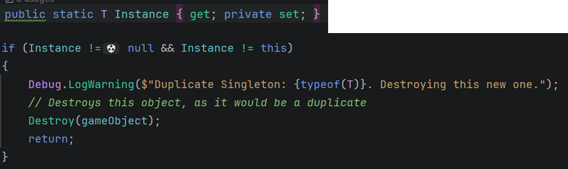 Additionally, because the Singleton parent was inheriting from MonoBehaviour, all children would also inherit from MonoBehaviour. This seemed like a convenient way to check if the argument passed into the class was of the correct type. However, I later realised you could just pass in another class that inherits from MonoBehaviour, not necessarily the exact same type. For instance, you may accidentally do this: public class HUDManager : Singleton<ExistenceManager> This would create a subtle bug because if you then instantiate the HUDManager, it would compile, but would check if the ExistenceManager exists and would then delete the new HUD manager because it would assume the HUDManager is a duplicate. Thus, I added in another type check before any instances are checked and deleted. This checks the exact types so is much more robust. 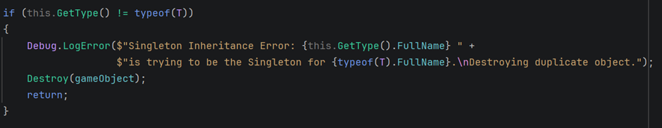 Now if I ever need to access any fields or methods in the ExistenceManager or HUDManager I can go: ExistenceManager.Instance.SpawnPlayer(); Or HUDManager.Instance.CreateHUD(); However, I would have to make these methods public first as I have left them private until I need to use them. Standards & Research This was a direct application of the DRY (Don't Repeat Yourself) principle. Without this abstract parent class, I would have needed duplicated boilerplate Awake() logic in every manager. Additionally, now that logic is in one place, it is much cleaner and clearly follows the Open-Closed principle. This is because I can always extend the Singleton class by giving it more children or functions. It is also dynamic because it takes the child as a parameter and adapts the instance checking to that child, as opposed to having many different instance checks hard-coded into one function. This implementation directly supports my research: "The Singleton pattern is great for manager classes. It is all about ensuring a class has only one instance... Another example of a Singleton would be a player spawner... [to prevent] listening to the same events... and then trying to spawn the player multiple times." Reflection Strengths: This pattern gives is good because it creates a rock-solid, globally accessible classes, to manage different aspects of the game, such as the HUD. It's consistent and prevents messy duplicate managers, especially when reloading scenes. Limitations: The main risk is overusing it, which could make the Singleton a "god object." I am trying to mitigate this by keeping its responsibility truly single: just managing the "life and death" of objects, as planned in our research ("call it 'Existence Manager'... This would then encourage collaborations to only use the class as specified"). However, I still feel like I could run into issues if I am too reckless when I access fields and methods. If I ever need to access a field like the player on the Existence manager, I made a TryGetPlayer function. I’m certain this will be used in the future and I will likely have to follow suit if I ever need to access field on the HUD, etc. Future Usage: I may also use this for any unique, persistent managers like an AudioManager. I won’t use it for prefabs like SpikeTrap or the CharacterManager component, as they will have multiple instances and shouldn’t be confused with the proper Singleton managers. Research: Edited November 13, 2025Nov 13 by Jake Astles I changed "and" to "&". I also added a research link at the bottom. Link to comment https://daf.staffs.ac.uk/topic/78912-astles-jake-a013867o/#findComment-1102552 Report
November 13, 2025Nov 13 Author comment_1102561 Development Update: Player Respawn Logic (Observer Pattern) I made player damage and death event-based so I could reset the player efficiently from the game manager and communicate with other scripts when the player is damaged. Pattern Overview Name and Category: Observer (Behavioural Pattern) Description & Problems Solved As I wrote in my research, this "works like a radio station. One object broadcasts whilst other objects listen." It lets a "Subject" (like the player) notify "Observers" (like the HUD) when an event happens, without either side needing to know about the other's internal logic. 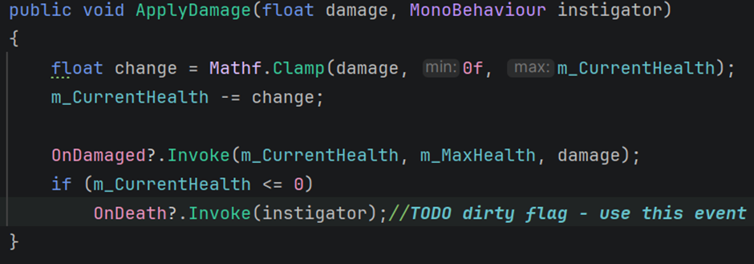 Additionally, the HUD gets deactivated if the player was killed by something. However, this isn’t run when the player first spawns so it always starts active. 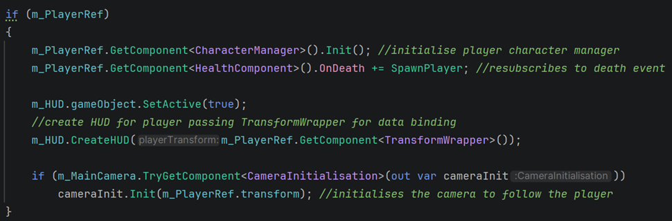 On every spawn the event is then bound again and the camera is re-initialised. Standards & Research This is far better than having the HealthComponent know about the ExistenceManager and the HUD. This is why I used two separate, unrelated subscribers: CharacterManager and ExistenceManager. Both listen to OnDeath for their own purposes, and neither knows the other exists. This is a direct implementation of my research: "For example, a player might broadcast an OnDeath event when it dies. Many objects may be listening for this like the HUD... the game manager (to know if the player needs respawning)..." Reflection Strengths: This is incredibly decoupled. I can add 10 more "forgiveness" systems that react to death (e.g., an Analytics logger) just by subscribing them to the event, all without ever touching the HealthComponent script. Limitations: If overused, it can be hard to trace the "domino effect" of one event triggering many others. Things can get complicated quickly when events are based off other events, especially when one multiple events are trying to unsubscribe and subscribe to each other and you’re trying to time the functions correctly. Future Usage: This is essential for our OnDeath forgiveness mechanic. I'll also use it for any 1-to-many "broadcasts," like OnPuzzleSolved, OnCheckpointReached, or OnBossDefeated. I haven’t actually used the OnDamage event yet, but I’m certain it will be useful for future mechanics such as healing or a forgiveness mechanic like increasing damage based on health remaining. This would be implemented using the Dirty Flag strategy where the health check would only be performed if damage was received. Research: Edited November 13, 2025Nov 13 by Jake Astles Fixed layout. Link to comment https://daf.staffs.ac.uk/topic/78912-astles-jake-a013867o/#findComment-1102561 Report
November 15, 2025Nov 15 Author comment_1103860 My last three posts seem to have been in the wrong thread; they should have been put in the second assessment thread instead. I will move them over now and update this thread with the relevant mechanics plan and mechanics implementation videos instead. Link to comment https://daf.staffs.ac.uk/topic/78912-astles-jake-a013867o/#findComment-1103860 Report
November 15, 2025Nov 15 Author comment_1103869 Mechanic Planning: "Apex Hangtime" Forgiveness Mechanic This mechanic would require three variables and one new state in a jump state enum. Serialized Fields (in CharacterMovement): [SerializeField] private float m_ApexGravity: The new gravity scale to apply (e.g., 0.2f). [SerializeField] private float m_ApexGravityTime: The total duration for the anti-gravity (e.g., 0.2f). Private State Variable: private float m_ApexGravityCounter: A timer to track the remaining hangtime. JumpStates Enum: Would require Rising, Apex, and Falling to track the states. Implementation (in FixedUpdate) FixedUpdate would work like a State Machine. The logic is split into three parts, following the execution flow: Entering the State: This would run the collision check only when the state changes. Inside FixedUpdate, I would check if the linear Y velocity is around zero, to see if the player has reached the peak and is about to start descending. if (m_CurrentState == JumpStates.Rising && ALMOST_ZERO(m_RB.linearVelocityY)) { // State change! m_CurrentState = JumpStates.Apex; // Reduces gravity m_RB.gravityScale = m_ApexGravity; // Starts the timer m_ApexGravityCounter = m_ApexGravityTime; } During the State: This block runs while the player is hanging at the apex. It checks the timer. If the timer is still running, it just counts down. If it hits zero, it transitions the player to the Falling state. else if (m_CurrentState == JumpStates.Apex) { if (m_ApexGravityCounter > 0) { m_ApexGravityCounter -= Time.fixedDeltaTime; } else { // Timer finished – falls normally m_CurrentState = JumpStates.Falling; } } 3. Exiting the State/Falling: This resets the gravity back to normal, ensuring the "hangtime" doesn't last forever. else if (m_CurrentState == JumpStates.Falling) { // Reset gravity to its default value m_RB.gravityScale = 1f; } Final Thoughts This wasn’t just a simple physics tweak, it actually makes the jump feel smoother by slowing the player at the peak, giving them more time to react and aim their landing. This reduces frustration on difficult "parkour" jumps over SpikeTraps or small platforms. Edited November 15, 2025Nov 15 by Jake Astles Link to comment https://daf.staffs.ac.uk/topic/78912-astles-jake-a013867o/#findComment-1103869 Report
November 15, 2025Nov 15 Author comment_1103870 Development Update: "Apex Hangtime" Forgiveness Mechanic I have almost finished the player's jump states and have started adding a forgiveness mechanic for hangtime at the apex. The Player holds a reference to an abstract State. The Grounded, Rising, Apex and Falling states are all concrete implementations of that State. The player just calls m_CurrentState.State() to return the specific state. 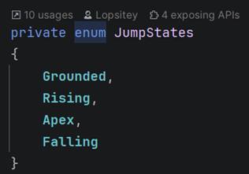 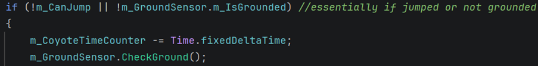 The above code is ran in FixedUpdate. It actually uses another design pattern (Dirty Flag). Essentially, if the player is in the air the ground is checked every frame and the coyote time is iterated. I will cover the coyote time and Dirty Flag design pattern in more detail in two separate future forum posts; these will be about collisions and how I made jumps juicy. 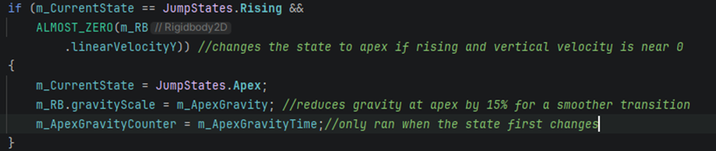 This section uses the states to determine if the player is at the apex, it also implements the logic to start the apex anti-gravity state and initialise/reset the relevant variables. 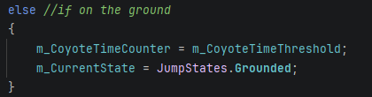 The defaults to being grounded if none of the other conditions are true. 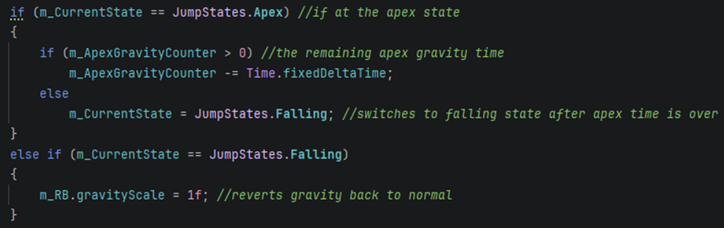 This just applies the anti-gravity when you’re in the apex state and then decides if you’re falling. Final Thoughts This wasn't in the initial movement script; it was a deliberate addition to make the jump feel better and be more forgiving, allowing the player more time to make a decision at the peak of their jump. Link to comment https://daf.staffs.ac.uk/topic/78912-astles-jake-a013867o/#findComment-1103870 Report
November 16, 2025Nov 16 Author comment_1104213 Mechanic Planning/Development Update: Input Forgiveness (Coyote Time & Jump Buffering) These mechanics will utilise the Dirty Flag and State patterns. They will be implemented in the player controller along with the other jump-related mechanics; however, if I think I may have to separate different sections of the player controller into smaller classes in the future, because I think it may get overcomplicated, when I inevitably extend it more for the other movement mechanics (like dashing). Concept Overview Not every gamer is built equally; some may have imperfect timing and slower reflexes, whilst others have reflexes which are too fast. This means the slower users may press jump slightly after the player has left the platform, whilst others, who have much faster reflexes, may end up pressing jump slightly before the player lands. This is why everyone needs forgiveness mechanics. Coyote time works by giving the slower people more time to react, whilst jump buffering delays the reaction of the faster players by a few milliseconds, right before the player hits the ground. Implementation As I forgot to do this mechanics plan before I implemented the features, this is also a development update. Therefore, the code below is more so the pseudocode for exactly what I’ve done, as opposed to a general plan. Coyote Time: When the Grounded state transitions to Falling, set a m_CoyoteTimeCounter - a timer (Dirty Flag). The Jump command is allowed if m_CurrentState == Grounded OR m_CoyoteTimeCounter > 0. Jump Buffer: When the Jump input is pressed in the Falling state, set a m_JumpBufferCounter - another timer. When the Falling state transitions to Grounded, check the flag and execute the jump if it's active. 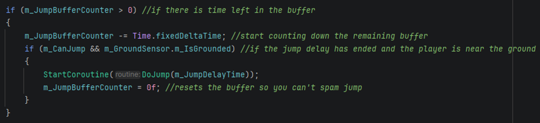 The Coyote Time can then get reset when the player is on the ground. 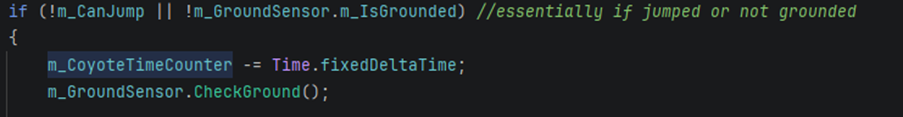 The Jump Buffer gets reset immediately after activation. 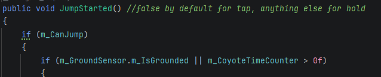 Whenever the jump key is pressed, this function fires. It essentially checks if the jump isn't on cooldown, then checks if you're on the ground or have Coyote Time left. If that's all true, then you can jump normally. If the jump isn't on cooldown but you're not on the ground or have Coyote Time left, then the jump buffer counter is reset and begins counting down. If you hit the ground before the timer is up you then the jump buffer is activated and the jump counts because it was within the threshold. 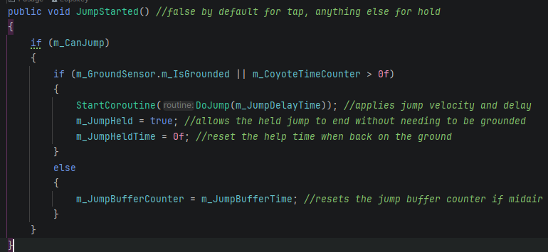 Final Thoughts This is standard, best practice. These two mechanics are arguably the most important "game feel" features. They make the controls feel responsive and, most importantly, fair. Player deaths can now be blamed more on skill and less on framerate or the game's feel. The only real issues I had were ones related to the collision detector. Once the coyote time was working, it was only a matter of adding a very similar timer in for the jump buffer and tuning the time (e.g., 0.15s) to feel responsive but not floaty. More on the collision detector in the assessment 2 thread. 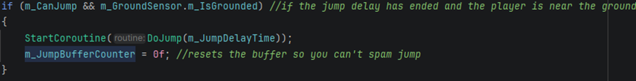 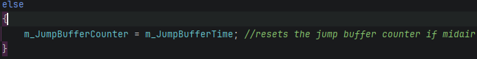 Edited November 16, 2025Nov 16 by Jake Astles Minor layout and grammar fixes. Link to comment https://daf.staffs.ac.uk/topic/78912-astles-jake-a013867o/#findComment-1104213 Report
November 16, 2025Nov 16 Author comment_1104221 Mechanic Plan: Variable Height Jumping This post covers how I implemented a Mario-style jump where, depending on how long you hold the jump key, you jump higher. Concept Overview Initially, I considered implementing the jump like Megaman does it, where the jump is performed upon the release of the key; however, I ended up deciding this was less juicy and more unintuitive than just holding the key for longer to go higher. Saving the time the jump key is held down, comparing that time, then choosing the jump height depending on if it meets a certain threshold, is a good way to make a charge jump, but, in my opinion, this makes the jump feel more like a power-up or a special ability instead of a basic core mechanic. The Strategy pattern lets you define a set of behaviours and make them interchangeable. The "Jump" action uses two strategies based on input: an initial impulse (on Jump.started) and a continuous hold force (while m_JumpHeld is true). Implementation JumpStarted() applies the ForceMode2D.Impulse and sets m_JumpHeld = true FixedUpdate() then applies a continuous ForceMode2D.Force as long as m_JumpHeld == true && m_CurrentState == JumpStates.Rising JumpEnded() sets m_JumpHeld = false, cutting the jump short. Final Thoughts The normal jump is basic and lacks control over the height, which makes it feel less smooth, more robotic, and slightly inaccurate. Being able to use variable jump heights much more expressive and controllable, which also makes it more forgiving. This is much better for skilled players who are used to being able to tap jump for a low height and hold it for a high height, whilst keeping the basic implementation of the default jump. The jump threshold, jump key held time, jump height multiplier and apex gravity amount all form a family of closed interrelated variables I now need to tweak to ensure the jump feels as smooth and balanced as possible. I’m sure this will be quite tedious as all of the values do very different things, but tweaking most will result in a very similar outcome, somewhere between hardly jumping at all and rocketing into space. Link to comment https://daf.staffs.ac.uk/topic/78912-astles-jake-a013867o/#findComment-1104221 Report
November 16, 2025Nov 16 Author comment_1104222 Development Update: Variable Height Jumping Increments the charge time whilst the jump key is held and uses that to add force to the player. Once the max charge is reached or if the jump key is released the jump is then performed and the held variable is reset. 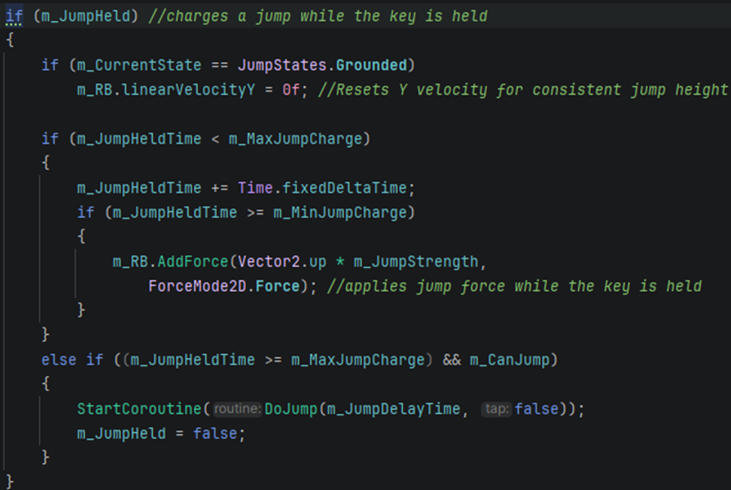 This is the function that handles instigating the jump. Jump is held by default, but due to the code in FixedUpdate(), it doesn’t actually start adding force until after the jump cooldown is over. m_JumpHeldTime could have been reset in fixed update, but I wanted to ensure the player didn’t try to queue a held jump with the jump buffer. 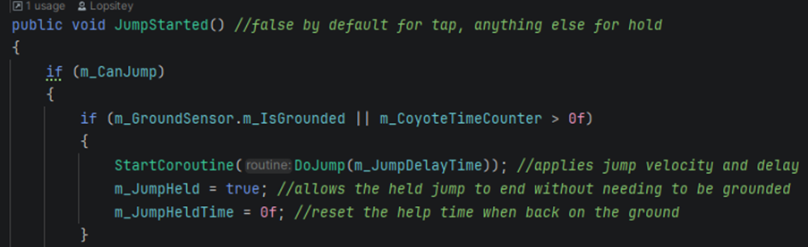 This is the basic jump code. The relevant section is outside of the tap scope. This is ran after the key is released or the maximum jump height has been reached. It essentially just resets the Coyote Time and changes the state. It also initiates the jump delay to prevent spam/double jumping weirdness.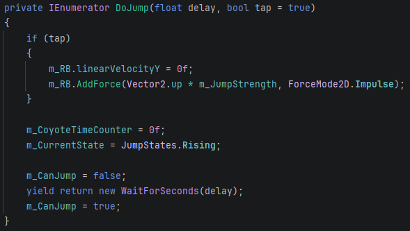 Link to comment https://daf.staffs.ac.uk/topic/78912-astles-jake-a013867o/#findComment-1104222 Report
November 17, 2025Nov 17 Author comment_1104591 Mechanic Planning: Relaxed Semi-Solids (Two-way platforms) This is a classic platformer feature and makes traversal much smoother. A classic implementation is in Terraria, where a player-made boss arena would have about one hundred of these, so you could easily avoid the boss at every angle. Thus, I’ll take inspiration from Terraria and ensure the platforms are always shorter than the player (potentially even translucent as well) to make it obvious they are two-way. 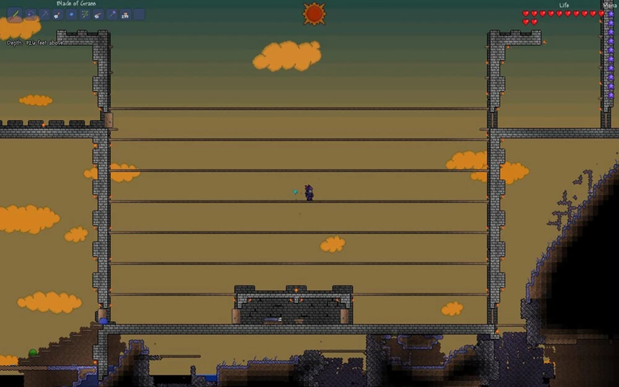 Concept Overview To give platforms the ability to allow players to jump through them from below, I just need to disable collisions with the platform layer when I am in my Rising state. I can then re-enable them again when I am in the Apex state. Allowing the player to press a button to drop down through the platform is a different issue. I’ll need to set up a new input which can disable the collision using a coroutine and then re-enable it when I hit the ground. Implementation To make this work, I will need to use a new variable to reference the layer the platforms are on. I will also need to create the "Semi-Solid" physics layer and use code to change its collision rules based on the player's state. In FixedUpdate(), when the player is in the Rising state, call: Physics2D.IgnoreLayerCollision(playerLayer, semiSolidLayer, true); Then, if in the Falling or Apex state, call: Physics2D.IgnoreLayerCollision(playerLayer, semiSolidLayer, false); The same code can be applied to the drop-down. If the button is pressed, then the layer is ignored. Then, if the player hits the ground, stop ignoring the layer. Final Thoughts A standard collider blocks movement from all directions. This mechanic allows for complex vertical level design and gives the player more freedom. However, IgnoreLayerCollision is a global, static call, which means that every platform will be disabled simultaneously. I can only see this being an issue if the player falls through one platform, aiming to land directly on another. This is because they would not have made contact with the ground yet, so they would continue falling. If I can fix this issue, then I can make these platforms a fundamental aspect of the Level Design, allowing for cool vertical parkour sections or potentially platforms that disappear over a period of time. Edited November 17, 2025Nov 17 by Jake Astles Minor layout fixes. Link to comment https://daf.staffs.ac.uk/topic/78912-astles-jake-a013867o/#findComment-1104591 Report
November 17, 2025Nov 17 Author comment_1104603 Development Update: Relaxed Semi-Solids (Two-way platforms) I quickly realised the issues with my previous plan using states and IgnoreLayerCollision to check whether I should ignore platforms or not. It was just too inefficient and, as I noted in my "Final Thoughts" on that plan, it had a critical bug, where dropping through one platform would make me fall through all of them. Instead, I have refactored this mechanic to use the modern, built-in Unity solution: Platform Effectors. These do half of the job for me, as they automatically handle the "jump-up-through" logic, and they do it on a per-platform basis, which fixes the bug. The PlatformEffector2D component is added to the platform prefab. By simply checking Use One Way, it tells the physics engine to allow the player (or any object) to pass through it from below, but land on it from above. 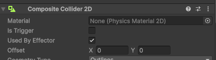 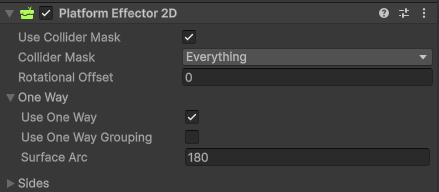 Instead of disabling the entire physics layer, I realised I can just temporarily ignore the individual platform the player is standing on. When the player presses the Drop key (S), I first check if they are on the ground to find the object they collided with. Lastly, I try to get the plate, which is a Semi-Solid and not a normal platform they're standing on. 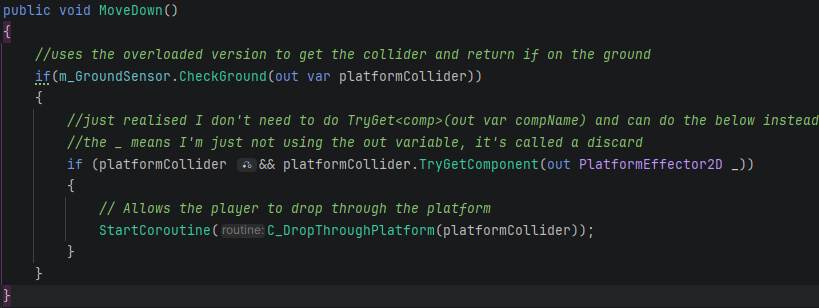 I then ignore the specific platform for a few milliseconds before allowing collision with it again. 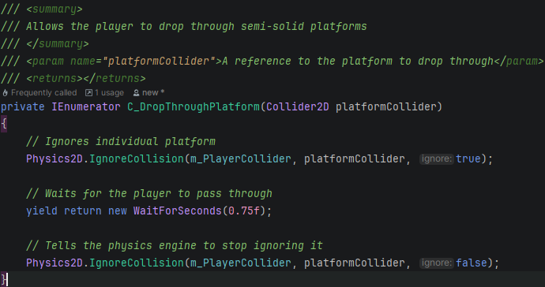 Final Thoughts This solution is far superior. It solves the "falling through everything bug I was worried about because it only ever affects one platform at a time. It is also more performant, as it lets the built-in physics engine do the work instead of me calling global IgnoreLayerCollision functions in FixedUpdate(). This is a much cleaner, component-based approach that removed a lot of messy logic from FixedUpdate() in the CharacterMovement script. This makes the mechanic much more robust. It will be great for fun level design, such as vertical parkour sections and hidden "drop-down" paths. Edited November 17, 2025Nov 17 by Jake Astles Layout fixes and image updates. Link to comment https://daf.staffs.ac.uk/topic/78912-astles-jake-a013867o/#findComment-1104603 Report
November 17, 2025Nov 17 Author comment_1105157 Mechanic Planning: "Speed Apex" Air Control Forgiveness This is a plan for a new forgiveness mechanic, "Speed Apex" Air Control, to make platforming feel more fun and responsive. Concept Overview This solves the issue of fixed robotic jumps, where a player is locked into a jump arc. Personally, I think this can be very annoying since a small miscalculation means guaranteed failure. This feature provides a forgiveness mechanic by giving the player more mid-air control post-jump. This works by increasing the player's movement speed whenever they are mid-jump it allowing them to change and move direction quickly. Implementation To make this work, I will have to modify how jump works in the CharacterMovement script. I will give the player a different horizontal speed value using their current state. 1. Create a new serialised field in the movement script: a. [SerializeField] private float m_AirMoveSpeed = 8f; b. Normal move speed should also now be called m_GroundMoveSpeed. 2. Modify the movement logic in FixedUpdate() to check the player's state. // Determines which speed to use float currentSpeed = m_GroundSensor.m_IsGrounded ? m_GroundMoveSpeed : m_AirMoveSpeed; // Apply the chosen speed m_RB.linearVelocityX = currentSpeed * m_InMove; Final Thoughts This mechanic allows the player to correct their jump trajectory. If they jump and see a spike trap, this increased air control gives them a chance to strafe and avoid it. On the flip side, if a player realises they are going to miss a platform below them, they have more of an opportunity to strafe towards it. I think this is a nice, easy forgiveness feature that makes the platforming feel fair and more fun for less skilled players. However, I have to be careful that I do not want m_AirMoveSpeed to be too high, as it will feel like the player is gliding in the air, and gravity will be meaningless. It could also break level design by allowing players to fly over gaps that were intended to be difficult. Thus, I must be certain that it is high enough to be useful but low enough to be subtle and balanced. Edited November 17, 2025Nov 17 by Jake Astles Minor layout fix. Link to comment https://daf.staffs.ac.uk/topic/78912-astles-jake-a013867o/#findComment-1105157 Report
November 18, 2025Nov 18 Author comment_1105362 Development Update: "Speed Apex" Air Control Forgiveness This was probably the easiest mechanic to implement so far as it only required an extra line of code in the movement coroutine. I also had to add a separate serialised field to hold the air movement speed and a new internal variable to change between the ground speed and the air speed. Implementation This just changes the current speed depending on if the player is grounded or not. 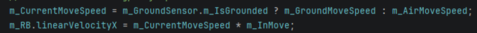 However, making this change made me double check all of my state logic and I realised my Apex state was firing inconsistently because of the helper function. The ALMOST_ZERO() function used to check if the value input was within 0.1 of zero. I did this knowing that it was unlikely my linear velocity would ever be precisely zero. However, I have recently realised this was far too small of a value to be checking as the velocity changes very quickly frame by frame. Therefore, I decided to update the function to make it more reusable instead. 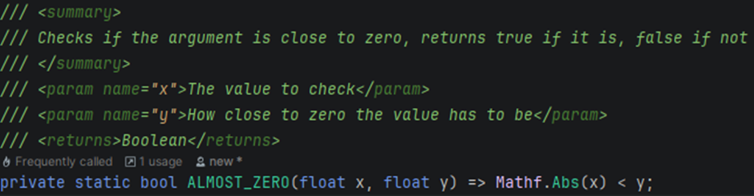 Now I can directly input the threshold into the function. I ended up deciding 5 was a good threshold for the Apex use case. Double checking my state logic also resulted in the following improvements. 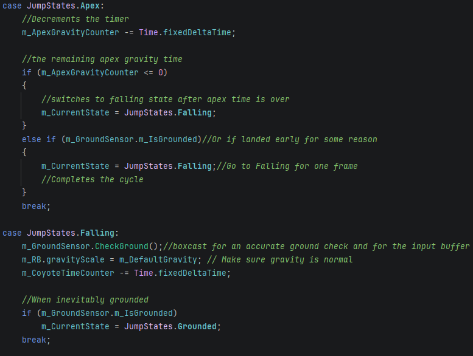 Not much has changed since my last post about these. The states are just neater now and the checks are slightly more optimised. For instance, there is an extra check in the Apex state in case you landed early. Final Thoughts This mechanic will certainly require a lot of tweaking and testing because, just like the apex anti-gravity, too high of a value results in the mechanic being too obvious and imbalanced, but too low of a value means you can hardly tell I have the mechanic implemented at all. Link to comment https://daf.staffs.ac.uk/topic/78912-astles-jake-a013867o/#findComment-1105362 Report
November 20, 2025Nov 20 Author comment_1106767 Mechanic Planning: Corner Clip On Jumps & Bumped Head Correction This plan details two new forgiveness mechanics. One is about fixing the frustrating "head bonk" problem, where a player's jump is unfairly stopped if their head overlaps a corner by a few pixels. The other is about the player’s legs/feet getting caught on corners when trying to jump onto a ledge. Concept Overview The problem is when a player jumps near a ledge, and their collider just barely clips the corner (by a pixel or two). This instantly kills all vertical momentum and feels like a cheap, unfair punishment. This can happen if the player is jumping vertically and their head gets caught on a door frame or the over part of a platform. It can also occur if the player is jumping across a gap or up onto a ledge, and they get stopped because their feet are slightly too far down. These features will help by giving the player a bit of leeway. Instead of stopping, the game logic will nudge the player so they can clear the corner and continue their jump. This prioritises smooth, fluid movement—which is essential for a parkour platformer—over a strict, pixel-perfect physics simulation. Implementation This logic cannot live in the FixedUpdate() state machine. It must be handled reactively, inside the OnCollisionEnter2D and OnCollisionStay2D methods. Add OnCollisionEnter2D: This method will be added to the collision sensor script. Filter for "Head Bonks": Inside this method, we must first check if the collision is a "head bonk": Is the player in the Rising state? Check the collision's contact. normal. If the normal is pointing mostly down (e.g., Vector2.Dot(contact.normal, Vector2.up) < -0.7f), the player hit something above them. Find the "Corner Clip": If it is a head bonk, is the overlap small enough to be forgiven? Get the Bounds of both the player's collider and the platform's collider. Calculate the horizontal overlap. Accept the overlap only if it is very small. For instance, Mathf.Abs(overlap) < 0.1f would just be a few pixels. Apply the Nudge: If all these conditions are true, nudge. Determine which direction to nudge the player left or right, away from the platform's centre, depending on the results from the overlap box. Use a small instantaneous horizontal force (m_RB.AddForce(nudgeDirection * m_NudgeForce)). This can all be applied to the corner clipping mechanic as well, but obviously, the overlap box will be on the player’s legs, and the angles of the box and force would be vertical. Final Thoughts This mechanic is the key to making parkour sections (like jumping up narrow gaps) feel fluid instead of frustrating. It removes some of the annoying deaths and is a core part of the game feel that makes platformers like Celeste so iconic. It's a forgiving mechanic that most players won't really even notice, but would soon realise if it wasn’t there. Tuning the maxOverlapToNudge (e.g., 0.1f) and the m_NudgeForce will require a lot of playtesting. If the nudge is too strong, the player will pop around platforms unrealistically. If it's too weak, it won't fix the bug. Link to comment https://daf.staffs.ac.uk/topic/78912-astles-jake-a013867o/#findComment-1106767 Report
November 20, 2025Nov 20 Author comment_1106812 evelopment Update: Corner Clip, On Jumps & Bumped Head Correction I have now implemented the Corner Clip and Bumped Head corrections, two critical forgiveness mechanics to smooth out platforming. However, the final implementation ended up being a bit different to the original plan of using collision overlaps. My original plan relied on OnCollisionEnter2D and calculating overlaps using bounds. I found this to be imprecise and difficult to tune. The new solution uses ray casts from specific sensor points (shoulders and knees) to detect exactly where the collision is happening relative to the player's body. Head Correction: Instead of checking collision bounds, I now cast three rays above the player's head: Left Shoulder, Right Shoulder, and Centre. Each ray is horizontal for accuracy. Imagine a - - - pattern but with less gaps. If Left hits but Right misses, I know the player clipped the left corner. The script instantly shifts the position of the player right. If Right hits but Left misses, I nudge to the left. If Centre hits, it's a direct impact, so no correction is applied. Leg Correction (Corner Clip): I used similar logic on the feet. I cast a horizontal ray next to the top of the leg and a vertical ray from the foot to the top of the leg. If the legs are clear but the feet hit a wall, the game detects a missed jump and nudges the player upwards to clear the ledge. Final Thoughts Using rays gives mathematical precision that OnCollisionEnter lacked. I can tune the m_HeadWidth to define exactly how forgiving the corner correction is. These mechanics require further tuning. While they can work great, they can reactivate mid-air and cause the player to stutter around corners. Ideally, the systems work fluidly together; a head bump pushes the player sideways, and if they maintain upward momentum, the corner clip subsequently nudges them onto the platform. However, issues arise if the corner clip activates with low momentum. If the nudge does not push the player high enough, they begin to fall, prompting the sensors to detect the corner and attempt a second nudge. Additionally, during a held jump, the head bump correction can trigger multiple times while the player is suspended in the anti-gravity apex. Demo: Early Head Bump Mechanic Demo.mp4 15.91 MB · 0 downloads Edited November 20, 2025Nov 20 by Jake Astles Improved title/layout and removed a duplicate video. Link to comment https://daf.staffs.ac.uk/topic/78912-astles-jake-a013867o/#findComment-1106812 Report
November 20, 2025Nov 20 Author comment_1107329 Mechanic Planning: Sticky Feet On Land This mechanic is designed to help the player land on small platforms precisely without sliding off due to momentum. Concept Overview In platformers, players often carry high horizontal momentum from a jump. This can be annoying when trying to land on a tiny platform, because the momentum can cause them to slide off the edge before they have time to react, which feels slippery and unfair. Currently, this has meant all of my platforms have had to be a minimum size of two tiles, otherwise the game would feel tedious and inconsistent. Implementing this mechanic will be great because it means I can now design larger levels which use more varied platform sizes, making exploration more interesting and engaging. Implementation If the player is trying to turn: //Pressed move left, but still have right momentum if( dir == left && linearVelocityX > 0 || dir == right && linearVelcotiyX < 0) Or if they are trying to stop: if(dir == 0) Give the player friction to prevent them from sliding: [SerializeField] [Range(0f, 1f)] private float m_LandingFriction = 0.2f; This eliminates the "skid" distance, allowing for pixel-perfect landings on small tiles. This could be done by modifying the falling state to include some extra logic: if (isGrounded) { //Checks if landing while trying to stop OR turn around bool tryingToStop = ALMOST_ZERO(m_InMove, 0.01f);//if within 0.01 of 0 bool tryingToTurn = Mathf.Sign(m_InMove) != Mathf.Sign(m_RB.linearVelocityX); if (tryingToStop || tryingToTurn) { //Reduces horizontal momentum m_RB.linearVelocityX *= m_LandingFriction; } m_CurrentState = JumpStates.Grounded; } Final Thoughts This majorly improves the smoothness of the controls. It removes the frustration of making a difficult jump only to slide into a spike pit because of physics engine's friction. I just need to be careful not to kill the momentum if the player wants to keep moving (e.g., bunny hopping). The check must ensure it only triggers if the player is trying to stop or turn. Edited November 20, 2025Nov 20 by Jake Astles Enabled syntax highlighting. Link to comment https://daf.staffs.ac.uk/topic/78912-astles-jake-a013867o/#findComment-1107329 Report
November 20, 2025Nov 20 Author comment_1107382 Development Update: “Sticky Feet” Landing Forgiveness I have now implemented the Sticky Feet system. This works well with the second-newest mechanic: Corner Clip. They make platforming feel more fluid, especially when used consecutively, because Corner Clip helps players get onto platforms and Sticky Feet ensures they stay there. Sticky Feet On Landing.mp4 17.42 MB · 0 downloads Final Thoughts This implementation has drastically improved the precision of the controls, especially on 1x1 tile platforms. By applying a friction factor instead of killing velocity outright, the movement looks and feels more natural, without the unfair sliding. Additionally, I refined the logic to be more robust: instead of relying on confusing Mathf.Sign checks, I saw used by professionals online, I decided to go with the more readable condition (dir == left && velocity > 0) to detect turns. Thus, ensuring the friction only triggers when the player intends to stop or turn. This maintains momentum a lot better for advanced techniques like bunny hopping while eliminating the skid death frustration. Link to comment https://daf.staffs.ac.uk/topic/78912-astles-jake-a013867o/#findComment-1107382 Report
November 21, 2025Nov 21 Author comment_1107577 Project Reflection When I started this project back in September, my only real goal was make the character move without breaking everything and potentially even make a few interesting platforms to do parkour on. But I learned pretty quickly that sometimes games can be too realistic, if you play by the strict rules of the engine, platformers feel clunky and unfair. So, I focussed much more on forgiveness mechanics, as opposed to adding extra features. I realized a juicy game means just writing code that lets the player get away with mistakes. I did end up using some fancy industry standards like SOLID and Design Patterns, but I mostly used them to build systems that lie to the physics engine so the player doesn't rage quit. This post covers how I went from a messy pile of scripts to a system designed specifically to be nice to the player. Crucial and Complex Bits The State Machine: I refactored the player controller from a series of Boolean checks into a robust State Pattern (Grounded, Rising, Apex, Falling). This allowed me to implement Apex Hangtime, where I manipulate gravity at the peak of a jump to give the player more time to aim their landing. Input Forgiveness: I implemented Coyote Time (allowing late jumps) and Jump Buffering (remembering early inputs). These prevent the controls from feeling stiff or unresponsive. Collision Correction: Perhaps the most complex implementation was the Corner Correction system. I moved from simple collider triggers to a precise ray cast system anchored to the player's bounds. This detects if the player has clipped a ceiling or a ledge by a few pixels and nudges them into the correct position, maintaining momentum whilst feeling smooth. Solving Annoying Issues The development process wasn't just about adding features; it was about solving critical logic bugs that arose from high-speed platforming. Stale Data: I encountered issues where the player would walk off a ledge, but the state machine would still think they were grounded due to physics update delays. I fixed this by optimizing the check a bit: running a box cast only when the collider has an OnCollisionEntered or OnCollisionExit event. This meant that I only ended up having to run collision check, on tick, when the player was in the air, as opposed to constantly running one no matter what. The "Tap Jump" Physics: I discovered that standard ray casts failed to detect every spot on the head during corner corrections. To fix this I made the rays horizontal above the player’s head, as opposed to vertical beams poking out of the top. This meant I could be much more precise with the ray location and areas of the head which were allowed to be bumped. This was good because it meant the player slides around obstacles even if the very edge of their head is detected, as opposed to two specific spots on the head. Final Thoughts Early versions of the codebase relied on messy if statements and direct references that were prone to breaking. The current project is modular, testable, and built to handle the complexities of a precision platformer. It can also be extended easily because of the overloaded functions and abstract classes/polymorphism. The biggest lesson I have learned is that good game feel is rarely just physic, it is code. Mechanics like Apex Hangtime, Corner Correction, and Sticky Feet are not natural behaviours of the physics engine; they are deliberate, programmed interventions designed to make the game feel fair. By supporting these mechanics with a clean architecture (State Machines, Singletons, and Interfaces), I have created a foundation that is not only fun to play but easy to expand upon in the future. Edited November 21, 2025Nov 21 by Jake Astles Improved video height and width. Link to comment https://daf.staffs.ac.uk/topic/78912-astles-jake-a013867o/#findComment-1107577 Report

")